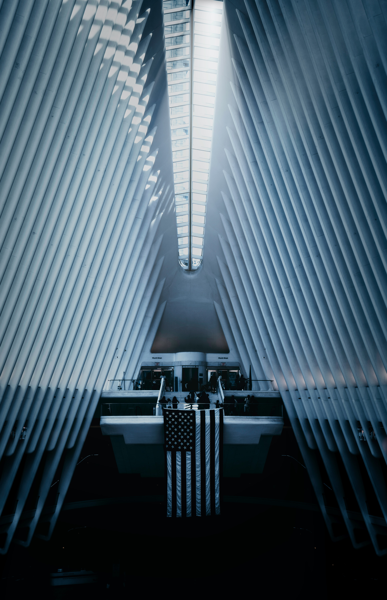

안녕하세요.
제가 처음 만들어보는 웹페이지네요.
사진 자리에는 제 사진이 없어서 아무거나 넣었습니다.

저는 이병재라고 하는 평범한 청년입니다. 태어나서 지금까지 쭉 천안에서 살았구요.
지금까지는 그냥 되는대로 살았던것 같아요. 전문대 나와서 학교 졸업하기도 전에 취업해서
조금 빨리 사회생활을 시작했지만 일을 하면서도 흥미가 없어서 마음을 붙이진 못했던 것 같아요
학교 다닐때부터 프로그래밍에 관심이 있었고 혼자 해보려고 책도 여러권 샀지만
이런저런 일들이 겹쳐서 공부가 잘 안되더라구요. 그래서 재작년에 희망퇴직을 하게 되었을때
제가 쭉 하고 싶었던 프로그래머가 되고자 도전을 하려 했지만 너무 겁이 나서
친구 소개로 다른 일을 하게 되었어요. 하지만 그 일을 하면서 계속 후회가 되어서
결국엔 그만두게 되었습니다. 이제 진짜 인생의 마지막 도전을 해보려고 합니다.
처음 만드는 페이지고 요즘 바빠서 완벽하게 만들지는 못했지만 나름 노력했어요...